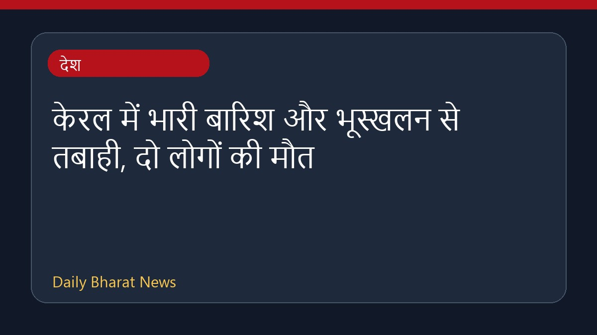

केरल में भारी बारिश और भूस्खलन से तबाही, दो लोगों की मौत

केरल में लगातार हो रही भारी बारिश के कारण आई बाढ़ और भूस्खलन से जनजीवन अस्त-व्यस्त हो गया है। इस आपदा में कम से कम दो लोगों की मौत हो गई है और कई अन्य लोगों के फंसे होने की आशंका जताई जा रही है। स्थिति की गंभीरता को देखते हुए राज्य के आठ जिलों में रेड अलर्ट जारी किया गया है। राहत और बचाव कार्यों को तेज करने के लिए राजस्व मंत्री ने एक उच्च स्तरीय बैठक बुलाई है। प्रशासन प्रभावित क्षेत्रों में स्थिति पर लगातार नजर बनाए हुए है और बचाव अभियान जारी है।
मूल स्रोत: India News Sources
Kerala rain havoc: 2 dead, several feared trapped as landslides, floods batter state - The Times of India ↗
Kerala rain havoc: 2 dead, several feared trapped as landslides, floods batter state - The Times of India ↗